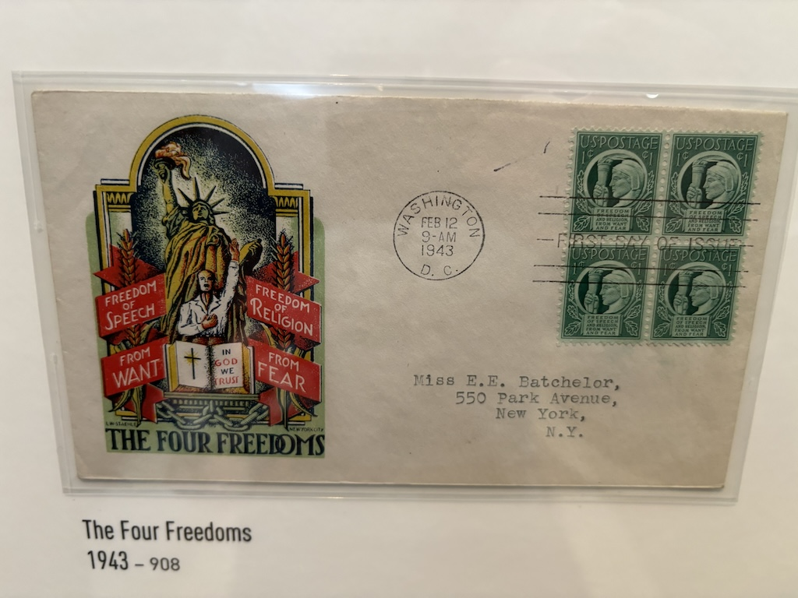

15th to 18th June 2024

Hello readers. I write to you from a cosy corner in my hostel/hotel style accommodation. They seem to do both kinds of rooms here, which I guess explains why the lobby is so nice. First major city of the trip. Here's what I've been up to.

The drive down to Washington D.C took about 5 1/2 hours, but I arrived in the evening with enough time to walk down to the capitol mall before it got dark. With the car parked in the garage beneath the hotel and my valuables stowed away in my shared room locker I walked to the Abraham Lincoln memorial, fortunately only around 30 minutes from my bed for the next few days.

Being about 6pm on a Saturday it was heaving with tourist. In 2024 it seems most people spend more time trying to get a good photo of themselves next to the landmark to share with others than actually looking at it. After traveling all this way, I do have to wonder why some people pay so much to then spend half the time looking at Abraham through their phone screen. I'm now resolved to only spend a moment taking photos of where I am, and will try to follow it up with 5 more of just looking and enjoying. Opposite the memorial is the reflection pool (which I have to admit I recognise first from Forrest Gump when he reunites with Jenny after his service) and behind it the rest of the "Capitol Mall".

I continued to stroll around until it was dark, including a soaking of my feet in the WW2 memorial. I encourage everyone to learn about the wars, but in particular the 2nd World War, with by far the most bloodshed of any conflict in human history. The memorial commemorates not just a battalion, or an army, but a whole generation that was caught up by pure chance in a very dark time. It could have been anyone. Lest we forget.

The next day was a 30,000 step day, visiting 4 different museums and viewing the various other monuments on the Mall. I got this cool shot of the Capitol building down Pennsylvania Avenue. Looks like a lot of roads lead out from the Capitol building, like spokes on a wheel. As a result driving or walking around the city you end up spotting it unusually often. The same is sort of true for the White House, but as it's obscured by foliage from behind it's not so eye-catching.
Now of course, I had to go to the Air & Space museum. I knew there would be lots on about the moon landings and other aviation history. Although I somehow forgot that this museum displays the original Wright brothers plane, a really quite impressive piece when you think about it. The only part that has been replaced is the fabric on the wings - the wooden parts are original!

I got this photo of a new exhibit being built for later this year supposedly, any thoughts on what it's about? The gold foil object suggests is a space related room, but then there's a propeller powered plane as well. Maybe the theme is plastic wrapped objects. If so I'd say they're almost finished.

More space stuff. They had replicas of all the lunar (lunar? I think it's lunar) rovers used on the missions to Mars or the Moon.

And even the command module from Apollo 11 named "Columbia" (the one where Neil Armstrong walked on the monn). It's the only part of the rocket that returned to Earth.
Next I went to the National Indian American museum. The exhibit was very well done, featuring information on how America became populated with Europeans, ways the Native Americans were relocated (for those interested search "the trail of tears", a very sad story) as well as information on how they lived and the number of tribes. One piece was an art installation of the American flag with each star being represented as the 2 digit code for the states established by the USA and in every stripe the name of the 450 or so tribes that originally lives in North America.
Below is a signpost from the Standing Rock protests. In 2016 the US planned to add a pipeline through the Standing Rock Sioux Tribe's lands and over concerns about water contamination the tribe protested against it's construction. Supporters of the tribe came from far and wide, adding to this sign where they had come from and how far they had traveled to protest in what is now North Dakota. The demonstration gained a lot of attention due to the sheer amount of support from afar, encapsulated in this sign. However in the end the Dakota Access Pipeline (DAPL) was ultimately completed in June 2017.

Afterwards I went to the National Postal Museum, a recommendation from a podcast I listened to when walking around on my first day. I found this one of the most enjoyable museums, fellow logistical nerds out there check this one out if you're ever in town. Below is the first stamp ever printed - the Penny Black - first issued in the United Kingdom on 1 May 1840, showing Queen Victoria.

Before visiting this museum I had no idea just how many different series of stamp designs have been commissioned. The museum has a huge vault of stamps from decades of US postal history. I've listed a few covers and stamps that stood out to me below.
This one with the statue of liberty is a really good piece of art.
I even found one commemorating the time the Americans threw our precious tea into the Boston Harbour.

In the gift shop they also had a star wars run that was available to buy. I'm not sure if they're valid as post stamps for use or just a collectors item but I was regardless very tempted to buy it. I always thought stamp collecting was quite dull, but after seeing the range of designs that have been printed I can see why people find it fun. I'd never considered how they commemorate a countries history, geography or culture through tiny pieces of art that everyone gets to enjoy simply by sending and receiving mail.

On the walk back I did the final big touristy thing to do on the mall - go see the White House. No idea if Joe was in there or not, the gardens do a great job of obscuring pretty much everything except the front of the building. The black high fencing does a good job of blocking that too, but it doesn't seem to stop anyone taking lots of photos of themselves in this spot. I wondered if it any president has played golf on that lawn. Stick a hole and a flag in and you could play on that green with ease.
Final day and I'm going for a long walk to the state of Virginia. I originally planned to leave this day but as the city was so enjoyable and with the sheer amount of things to see I paid for one more night. Based again on the advice of the podcast I listened to I visited Georgetown first. It's apparently one of the oldest districts of Washington D. C. and it definitely feels it with it's short terrace buildings and quaint feel.

The river crossing from Georgetown into Virginia (which is just over the river South of the city) crossed this dried up river bed. I just took this photo because I thought the view of the pedestrian crossings was nice. I also went to the Francis Scott Key memorial here too where the Star-Spangled Banner was written (America's national anthem) but instead I took a picture of this.

On the long loop back to the Capitol Mall I visited Theodore Roosevelt Island which had some nice shaded trails running around the boundary and a monument to the president in the centre. The picture doesn't really show it but this statue is huge, I'd say about 10 meters tall. I couldn't reach high enough for a high five so after a short sit in it's shadow I moved on.

There wasn't really anything noteworthy in Virginia to take a photo of other than the skyscrapers that are absent in Washington D. C.. It's a common misconception that the reason there are no tall buildings is due to a rule that nothing may be built taller than the Washington monument. The real reason was simply protest after the first moderately tall building was constructed (located by Dupont Circle). The town agreed to erect no more high rise structures after that.
I walked back to town and on the way admired a monument I completely missed right by the Lincoln memorial - the Korean War memorial. Behind where the below photo was taken are named of the fallen. Constructed in 1995 to commemorate the fallen in the 1950 North Korean invasion of South Korea the 30 statues show faces of discomfort and fear. It's a far more moving than the showing of brave or proud soldiers and I'm assuming far more true to what it was actually like. If you visit the Capitol Mall don't miss it like I did on day 1.

As I looped back home I had to take a photo of this advert. Because why travel all the way to Washington D. C., get to the base of the Washington monument and then bother going up it when you can look at it in VR on your phone! If your reading this then by all means this would be a fun thing to do at home. But why do it a hundred yards from the real thing?

That afternoon, as I had gained a day, I went to a few more museums. The American History museum had a mix of recent history and the story of the US being established. I'm very glad I went, as they had a few very impressive exhibits. Below is a photo of the Great Garrison Flag, originally flown from Fort McHenry in Baltimore Harbor during the war of 1812 against the British. It is the first version of what is (obviously) now the United States flag. Apparently it used to be hung by the entrance, but as much of it is falling apart it is lied flat in this very dark room, with the poem it inspired (the national anthem) written behind. How incredibly patriotic.
Now into the more recent stuff. Yes, that's right, they had original C-3PO and R2D2 costumes! Not THE original ones however, these were from Return of the Jedi, but still impressive to see. My uncle, a massive star wars fan with original action figures and all, will be very jealous I'm sure.

On the final morning before driving north I decided I'd go for a run around any monuments I had missed. Check out wasn't until 11am so I had time to head around everything I hadn't seen yet. Here's the Martin Luther King Jr memorial. There are other quotes around it but inscribed on the side it reads "Out of the mountain of despair, a stone of hope".

Along the basin from this is the Franklin Delano Roosevelt memorial. It's really beautiful, combining metal sculptures and stone guided waterfalls. It's also the only monument to pay tribute to a First Lady (the Presidents wife) honouring her support and contribution to his presidency. This is just a photo of one of the waterfalls but I'd encourage you to look up the rest of the monument, it's probably the most elaborate one on the mall.

The last thing I saw before heading back to the accommodation was the Thomas Jefferson memorial. He's housed in a big columned building overlooking the tidal basin and at this time in the day no one was there. Lead to me getting this fun photo of myself, sweaty from the run but cool in the shade of this structure.

That's all for now. Sorry it ended up being a long one but there was lots I wanted to write about. I'll see if I can keep this momentum up as I continue to clock more miles on the car. Philly's up next, and it's available here. Otherwise return home.